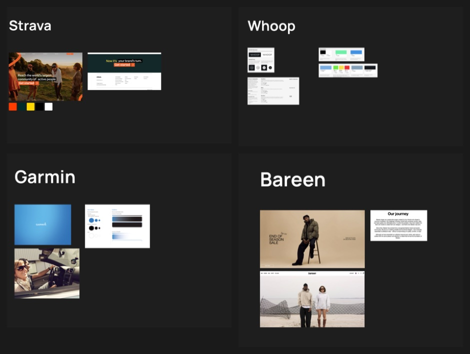
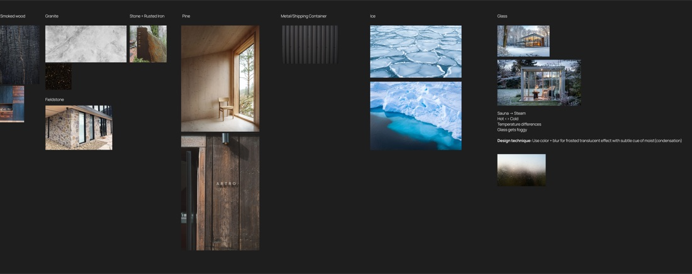

Nordic Health Club
2026
A Nordic-style wellness club opening in Lisbon. Sauna, ice plunge, community. This is the study I ran before the identity existed, where I argued about direction while everything was still cheap to change.
A Nordic club in Lisbon
The whole brief was in that sentence. Nordic ritual is cold, quiet and a bit severe. Lisbon is warm, loud and social. Lean too far north and the brand gets austere in a city that is not. Lean too far south and it stops being the thing people are paying for.
So I built the study around holding both, and every decision in it comes back to that tension.
Four references, not one of them a gym

I did not look at gyms, because looking at gyms would have produced a gym. I pulled Strava, Whoop and Garmin because they are brands built for people who measure themselves, which is closer to the truth of who books an ice plunge at seven in the morning. I added Bareen for the opposite quality: restraint, landscape, nothing shouting.
Picking references from next door to the category rather than inside it is how I avoid making the fourth version of a thing that already exists.
Three typefaces, three problems
I settled the type direction before drawing any options. Grotesque, because it reads as modern and legible while keeping enough raw detail to feel industrial rather than clinical.
Then I set three pairings in the same sentence so the comparison was fair, and I scored each on what was wrong with it rather than what was nice about it.
Hanken Grotesk for display, Inter or IBM Plex Mono for text
Nordic Health Club
Nordic Health Club is a Nordic-style wellness club launching in Lisbon.
Neo grotesque. Open source. Reads a little academic.
Manrope for display, Roboto for text
Nordic Health Club
Nordic Health Club is a Nordic-style wellness club launching in Lisbon.
Geometric grotesque hybrid. Open source. Reads a little corporate.
Neue Haas Grotesk for display, Helvetica Neue for text
Nordic Health Club
Nordic Health Club is a Nordic-style wellness club launching in Lisbon.
Neo grotesque. Licensed, so somebody has to pay for it every year.1
Hanken Grotesk is open source and reads a little academic. Manrope is open source and reads a little corporate. Neue Haas Grotesk is the one that looked right to me, and it is the one the club would have to pay for every year.
I wrote the objection next to each option because every one of them is a trade rather than a winner. That is what turns a mood board into a decision the client can make with me.
Materials before decoration

I organised the board by what things are made of, which keeps it useful. A mood board of feelings tells a developer nothing. A board that says smoked wood and rusted iron tells them which way the whole thing leans.
The note I am proudest of sits under the glass column. Sauna makes steam, hot meets cold, glass fogs. So the technique I proposed is colour plus blur, a frosted translucent surface with a faint cue of condensation. I derived it from a physical fact about the building rather than from a trend, so it should still make sense in five years.
Colour named after the rituals
Base neutrals · the room itself
Primary accent · pick one, it becomes the brand signal
Secondary · the plunge, plus whichever accent did not win
Additional · one colour, held back
I pulled every colour above from a photograph on one of three boards, one per thing the club actually does, and kept the name of where it came from. The neutrals come from smoked wood and royal stone, the two materials you stand between for most of a visit. I gave every swatch a Pantone reference in the study, with a note that they need checking in person before anything gets printed.
I named the colours after rituals rather than pigments so that an argument about using one becomes an argument about the club rather than about taste. Somebody proposing an orange headline is proposing to lead with the sauna.
That is also why I recommended against cold as the primary. The plunge is the part you endure and boast about afterwards. The sauna and the room full of people are what sell a membership, so I argued the brand signal should be warm and the blue should stay in support.